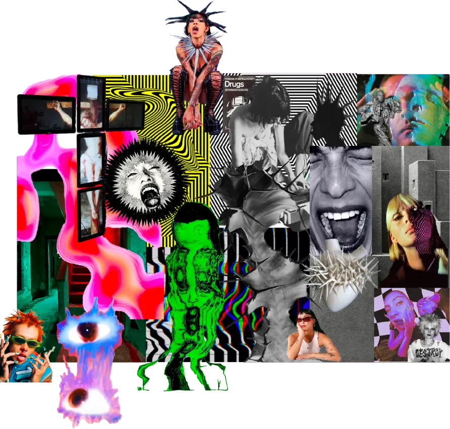
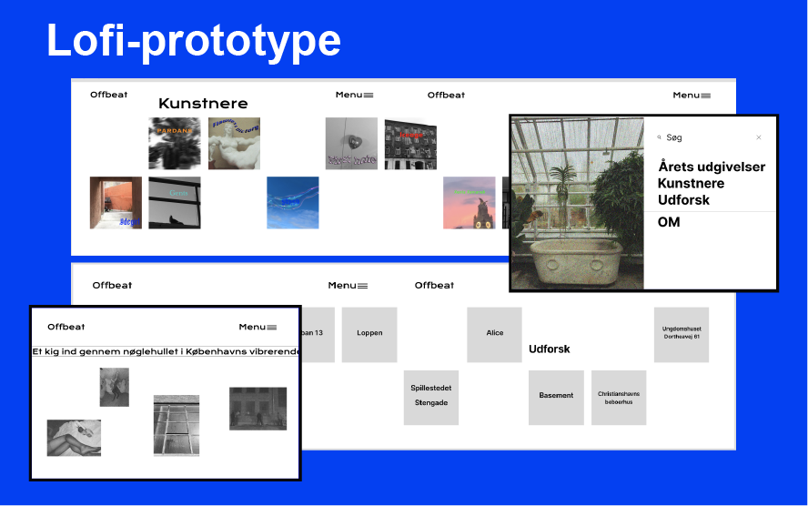
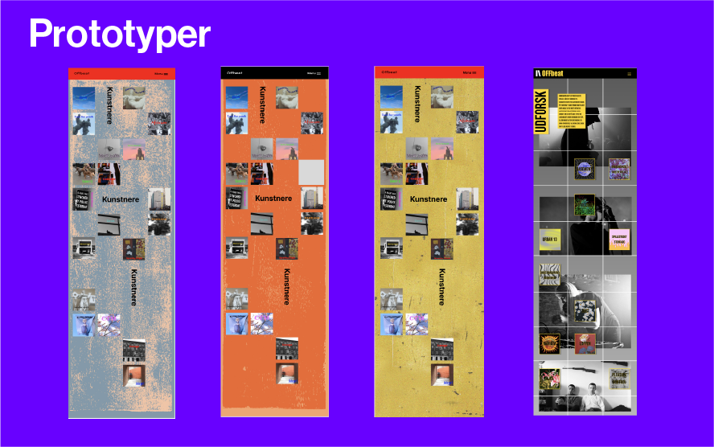
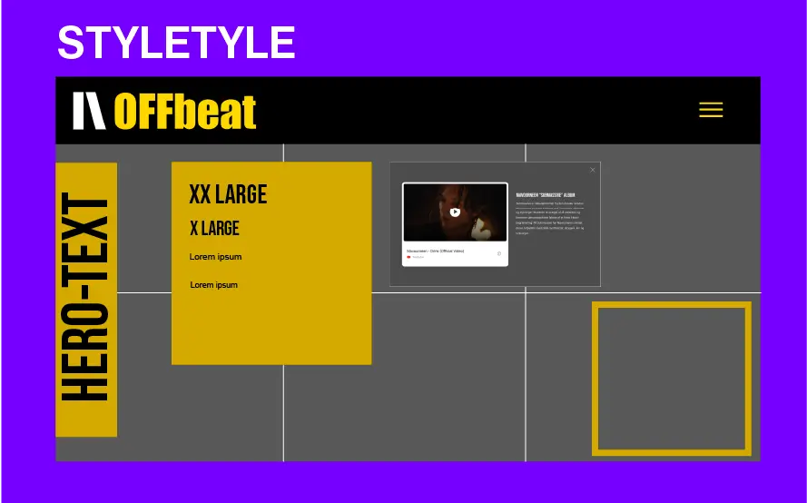
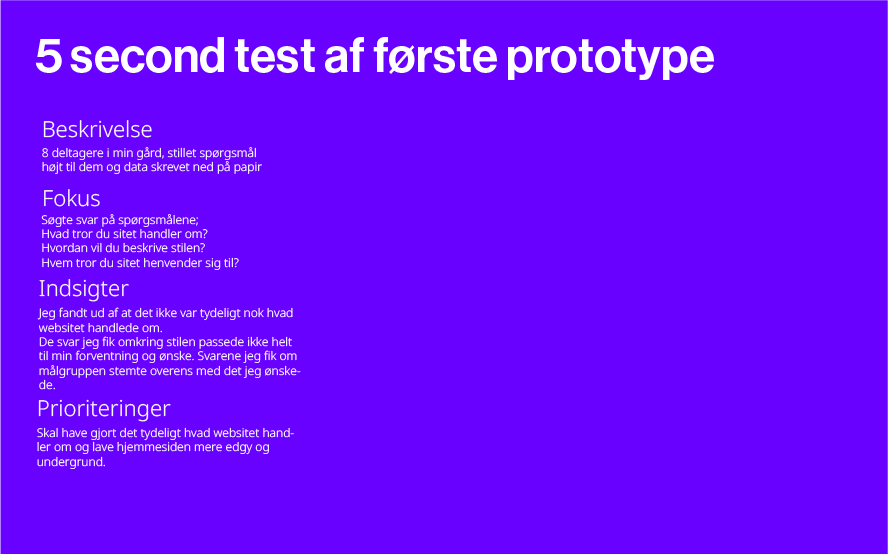
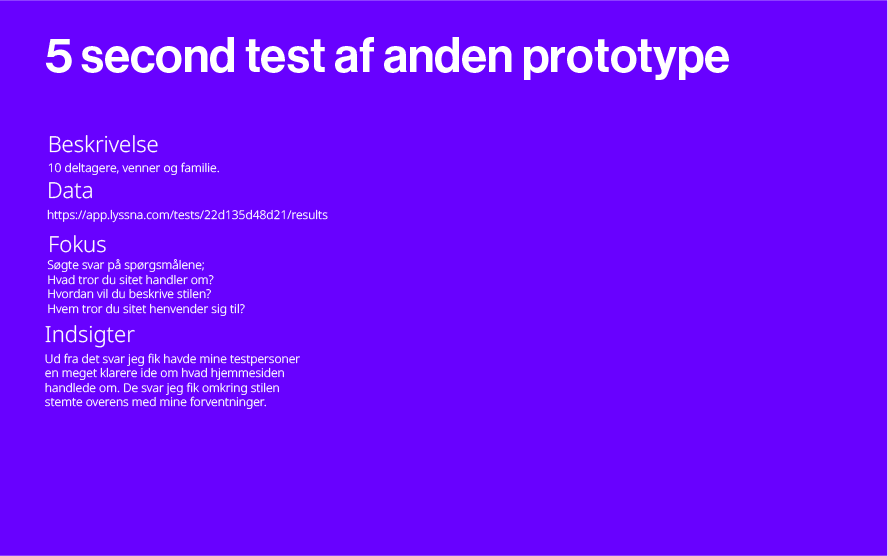
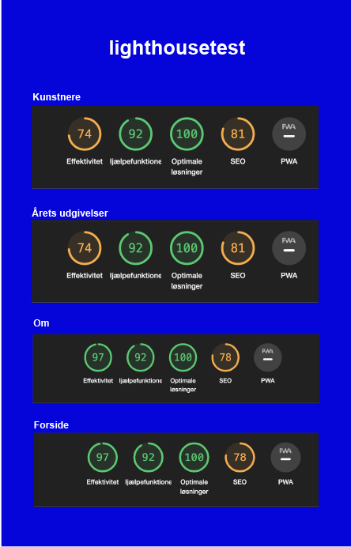

KIM HYE REE 김혜리
GRUNDLÆGGENDE UI/UX
Mit projekt i tema 3 grundlæggende UI/UX gik ud på at skulle designe og lave et website om valgfrit emne. Jeg fik en forståelse for en idegenerering, designproces og hvordan jeg til sidst fik implementerede det hele i Visual Studio Code.
AT FINDE IDEEN
Jeg startede ud med at skrive mine interesser ned for at finde et emne til mit website. Musik viste sig at være mit valg. Herefter præciseret emnet som blev; Undergrundsscenen i København.
FORMÅL OG MÅLGRUPPE
For at identificere og forstå min målgruppe bedre, lavede jeg nogle userstories.

DESIGNPROCES
Jeg lavede et moodboard over mit emne undergrundsmusik. Her fandt jeg frem til den stemning og stil jeg ønskede i mit design på websitet. Jeg opfangede en masse kontrastfyldte farver, og en tekstur lignende beton.
Jeg valgte tre værdiord om mit emne som blev; ungt, undergrund og industrielt. Ud fra hvert ord samlede jeg visuelt materiale.


PROTOTYPE
Jeg startede med at lave en lofiprotype i Figma. For at se hvad andre synes om mit websiteide lavede jeg en 5 - second-test. Ud fra mine svar kunne jeg konkludere at mit website var for svært at navigere rundt på.

FLERE PROTOTYPER
Jeg lavede herefter flere forskellige prototyper og jeg var stadig ikke helt tilfreds. Til sidst nåede jeg dog frem til et design som jeg kunne være nogenlunde tilfreds med og gik med det. Jeg lavede så et styletyle ud fra dette. Med min endelige prototype lavede jeg også en 5-second test for at se om mit website var blevet forbedret i forhold til min lofi prototype.


5 SECOND TEST
Som tidligere nævnt lavede jeg 5-second test på både min lofi prototype og den endelige prototype. De svar jeg fik tilbage om den færdige prototype stemte overens med de svar jeg selv havde forventet.




LIGHTHOUSETEST
Til sidst lavede jeg en lighthousetest, hvilket har fået høj bedømmelse på hjælpefunktioner og optimale løsninger. Mit website har dog fået en lav score på effektivitet, hvilke nok har noget at gøre med mine billedefiler.

REFLEKSION
Når jeg kigger tilbage på dette tema, kan jeg se at jeg har udviklet mig gennem semestret. Jeg kan se at jeg ikke har formået at lave alle de tests vi blev introduceret for i temaet. På mit kodet website kan jeg se at der er nogle fejl i min kodning, f.eks. min navigation som responsivt design.